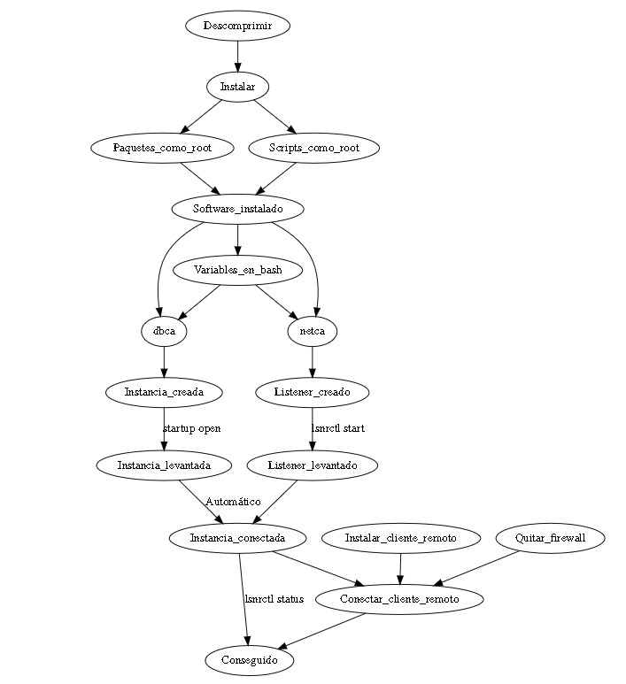
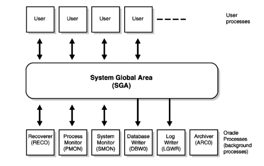
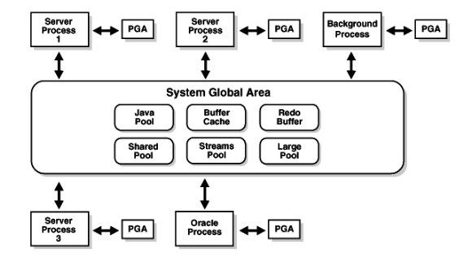
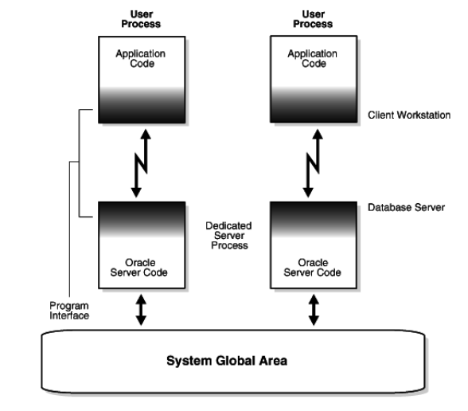

Intro
Un Sistema Gestor de Base de Datos (SGBD) o DataBase Managenent System (DBMS) es un sistema que permite la creación, gestión y administración de bases de datos, así como la elección y manejo de las estructuras necesarias para el almacenamiento y búsqueda de información del modo más eficiente posible.
Será una máquina virtual de VirtualBox.
Fichero OVA que contiene:
Cambiar el nombre de la máquina. Editamos los ficheros:
/etc/hostname
/etc/hosts → Hay que añadir el nombre de la máquina en 127.0.0.1 ó ::1
El instalador más cómodo de Oracle necesita un sistema de ventanas. Hay varias opciones:
startx
ssh -X alumno@IP-servidor
sudo yum install vnc-server
vncserver :0
descomprimir sus ficheros en el directorio $HOME/oracle-install-18c
unzip
→ Se arranca con ./runInstaller.
→ Instalar sólo el software de la base de datos.
→ Elegir Single instance database.
→ Edición Enterprise.
Dejamos los directorios por defecto:
/home/alumno/oracle-18c/home/alumno/oracle-install-18c/home/alumno/oraInventory
Elegir wheel.
Ignoramos la falta de memoria. El instalador detectará algunos errores, pero genera unso scripts de fix.
sudo yum install paqueteyum localinstall
/home/alumno/oraInventory/orainstRoot.sh
/home/alumno/oracle-install-18c/root.sh
Necesitamos definir algunas variables de entorno (ficheros ~/.profile, ~/.bash_profile, ~/.bashrc)
oraenv para definir estas variables.
En un servidor real no se hace, pero es más fácil para actualizar todas las variables de entorno. Después, podemos ver que los programas están, pero no hacen nada.
sqlplus / as sysdba
Varios procesos funcionando. Permite manipular una o varias bases de datos (En Oracle solo una).
Proceso que admite conexiones de clientes.
En otros SGBD (MySQL) la instancia es su propio listener, conecta los clientes con la instancia pedida.
Varios ficheros contiene datos, índices, esquema,...

Instancia y base de datos.

Ejemplo de listener.
Comando dbca. No estará en el PATH si no se ha incluido (por ejemplo, con oraenv), utilizar la configuración típica:
Lista de usuarios, se puede:
Permiten las conexiones de clientes remotos. Comando netca
listener.ora.
Si luego falla, revisar ADR_BASE_LISTENER.
Se necesitan las variables ORACLE_HOME, ORACLE_SID, PATH, ORACLE_BASE.
Se definen manualmente con ayuda del script oraenv.
source oraenv
dbstart $ORACLE_HOME
dbshut $ORACLE_HOME
Arrancar y parar el listener. Comprobar que se admiten conexiones.
lsnrctl start
lsnrctl stop
lsnrctl statusDespués de la creación de un listener y una instancia, ya podemos conectarnos a la base de datos. Recordatorio: Debemos tener configuradas las variables de entorno.
oraenvsqlplus / as sysdba
Es necesario conocer la IP de nuestro servidor.
ifconfighostname -Iip asystemctl disable firewalldEs necesario conocer la IP o nombre del ordenador remoto, si nos fiamos de DHCP, cada día puede ser una IP distinta. Es mejor usar un nombre:
Instalar avahi y avahi-tools. Activar opciones publish-hinfo y publish-workstation.
Desactivar el firewall, importante: el nombre afecta al fichero listener.ora.
El nombre de red será el que tengamos más .local. Por ejemplo:
alumnoASGBD.local
Con esto un Windows puede encontrar a un linux. Para que Linux encuentre a otro linux, hay que cambiar /etc/nsswitch.conf
En Centos, hay que instalar nss_mdns.
Instalar y conf. Samba en Centos 7
sudo yum install -y samba samba-client samba-common
systemctl enable smb.service
systemctl enable nmb.service
smb.conf, el netbios name → Máximo 15 caracteres, sin guiones.
Al crear la base de datos con dbca se configura el acceso Enterprise Manager.
URL: https://nombre-o-ip:5000/em/
El cliente sqlplus viene en la instalación de Oracle, pero tambiñen puede instalarse por separado.
libaio
sqlplus username/password@host:port/service
sqlplus sys/alumno@centos7.local/asir as sysdba
Se necesita JDK 1.8, se instalan los ficheros sqldeveloper-4.1.5.21.78-1.noarch.rpm y jdk-8u111-linux-x64.rpm
Descargar JDK 8
Descargar SQL Developer
Arrancar sqldeveloper desde consola - preguntará por el directorio de instalación del JDK.
Se necesita JDK 1.8.
Se descarga el fichero sqldeveloper-xxxx-no-jre.zip
Se descomprime y se ejecuta sqldeveloper.sh
| cd | Cambia el direcotrio actual |
| echo | Escribe los parámetros pasados |
| df | Espacio de disco usado |
| unzip | Descomprimir un zip |
| updatedb | Actualiza la lista de ficheros de disco |
| locate | Busca un fichero la lista de updatedb |
| ssh | Conexión remota |
| grep | Busca líneas con un texto |
| nano | Editor de ficheros |
| netstat | Ver conexiones de red |
| nc | Conectar por TCP o UDP |
| $var | Valor de una variable (de export y env) |
| | | Manda la salid de un programa a la entrada de otro |
| $HOME/.bashrc | Script de inicio del usuario |
| source | Ejecuta un script dento de la shell actual |
| export | Define una variable |
| env | Lista de variables |
| PATH | Lista de directorios donde se buscan comandos |
| history | Lista de comandos introducidos en la shell |

Oracle es un sistema complejo. Para hacerlo más seguro, sus tareas se distribuyen entre muchos procesos. Si un procesp falla, los demás pueden intentar seguir trabajando.

| PMON(Process MONitor) | Monitor de procesos, se encarga de controlar los otros procesos en background y de recuperarlos cuando uno de ellos falla. |
| SMON(System MONitor Process) | Recupera transacciones. realiza tareas de limpieza: recuperar segmentos temporales, combinar extensiones contiguas y disponibles,... |
| DWBn (Database Writer Process) | Escribe el contenido de los buffers en los datafiles. n puede ser 0,1,...,9,a,...,j |
| LGWR(Log Writer Process) | Gestión del buffer de redo, escribiendo su contenido en los archivos log. |
| CKPT(ChecKPoinT Process) | Actualiza los datafiles y el fichero de control cuando se establece un punto de control (checkpoint). |
| RECO (RECOverer Process) | Necesario ante fallos en transacciones distribuidas. |
PGA.Program Global Area. Es la zona de memoria dedicada a un proceso.
Global: si admite mñas de una conexión, se comparte entre conexiones.
SGA.System Global Area. Memoria compartida entre todos los procesos de Oracle.

Los procesos de usuario no se conectan directamente a la SGA. Oracle crea procesos intermedios para aislarlos.

Oracle tiene varios estados.
| Shutdown | Todo parado |
| Nomount | Memoria compartida reservada |
| Mount | Fichero de control abierto |
| Open | Fichero de datos abierto. Los clientes pueden conectarse. |
Shutdown y open son los modos habituales.
Nomount para recuperar la base de datos de errores(si falta algún fichero).
Mount para habilitar y deshabilitar el redo log. Para recuperar la base de datos de errores (sin usuarios)
Conclusión: con suerte, solo shutdown y open.
En un sistema relacional, toda la información se guarda en forma de relaciones. Las vistas son representaciones de otras vistas o relaciones.
La información acerca de la base de datos también se almacena en relaciones de la base de datos. Generalmente, en forma de vistas. Ejemplos:
create, alter, drop, grant, revoke, ...
| USER_XXX | Estática | Acerca de los objetos propiedad del usuario |
| ALL_XXX | Estática | Objetos que puede acceser el usuario |
| DBA_XXX | Estática | Todos los objetos de la base de datos (*) |
| V$XXX | Dinámica | Información dinámica de la instancia |
| GV$XXX | Dinámica | Información dinámica del cluster |
select * from dict;
v$datafile
v$tempfile
v$logfile, v$log
v$controlfile
v$diag_info
v$database
Los datos de las tablas al final se almacenan en archivos.
| Archivos de datos, de usuarios y del sistema. | En tablespaces (dbf). |
| Redo log (registro de todas las transacciones). | log |
| Archivos de control. | ctl |
Oracle puede usarse simultáneamente por varios procesos y clientes. Cada uno puede tener distintos permisos y capacidades.
Oracle almacena datos en los tablespaces.
Conjuntos de ficheros.Cada tablespace puede usarse para diferentes funciones.
Normas para su tamaño: inicial, máxim, crecimiento
Por defecto, Oracle crea en una nueva base de datos:
select tablespace_name, contents from dba_tablespaces;
CREATE TABLESPACE nombre
DATAFILE 'ruta/al/fichero.dbf'
AUTOEXTEND ON
NEXT 200k
MAXSIZE 2048k;
Esta flexibilidad permite:
Oracle tiene dos modos de autentificar usuarios.
CREATE USER usuario IDENTIFIED BY contraseña
DEFAULT TABLESPACE tablespace
TEMPORARY TABLESPACE tablespaceTemporal
QUOTA UNLIMITED ON tablespace
QUOTA tamaño ON tablespace
ACCOUNT lock/unlock
ALTER USER usuario CUALQUIER OPCION VALIDA AL CREAR USUARIO;
DROP USER usuario;
Cada usuario puede tener unos permisos distintos. Ya hemos visto dos permisos.
| Privilegio | Objeto sobre el que se aplica |
| create,alter,drop | table,sequence,view,user,synonym,session |
| select,update,delete,insert | Sobre campos de tablas y filas. |
grant PRIVILEGIO1,PRIVILEGIO2,...PRIVILEGION
on OBJETO
to USUARIO
with GRANT OPTION;
create table alumnos(...);
create user profesor ...;
grant select on alumnos to profesor;
Los privilegios se quitan con revoke.
Cuando un usuario pierde un privilegio, lo pierden también todos los que recibieron el mismo privilegio a través de él.
Por la cláusula with grant option.
connect sys/****
grant select on tabla1 to usuario1 with grant option;
connect usuario1/***
grant select on tabla1 to usuario2;
connect sys/****
revoke select on tabla1 from usuario1;
Asignar todos los privilegios a un usuario es trabajoso, pero factible. Qué ocurre si tenemos que manejar a muchos usuarios? Los roles permiten dar nombre a un grupo de privilegios.
CEATE ROLE nombrerole;
GRANT privilegios ON objeto TO nombrerole;
GRANT nombrerole TO usuario1;
GRANT nombrerole TO usuario2;
...
GRANT nombrerole TO usuarion;
Un profile es un conjunto de limitaciones sobre el sistema Oracle.
No limita acceso a datos, sino al propio SGBD y sistema operativo.
CREATE PROFILE nombreperfil LIMIT
session_per_user UNLIMITED
cpu_per_session UNLIMITED
cpu_per_call 30000
connect_time 45
idle_time 300
logical_reads_per_session DEFAULT
logical_reads_per_call 1000
private_sga 15K
composite_limit 5000000;
ALTER SYSTEM SET resource_limit = TRUE scope = BOTH
En la creación (create user), o posteriormente.
alter user USUARIO profile NOMBREDELPERFIL;
Oracle es un servidor de base de datos, idealmente, cada usuario debería poder usar la base de datos como si fuera para él en exclusica (ACID). Más de un usuario, y más de un cliente por usuario, puede utilizar a la vez el servidor. Problemas:
| Atomicidad | Un conjunto de cambios se realiza en su totalidad, o no se realiza ninguno. |
| Consistencia | Las reglas de los datos (constraints) se respetan. |
| Aislamiento | Cada usuario puede trabajar considerando que es el único que usa la BD. |
| Durabilidad | Una vez grabada una modificación, persistirá aunque ocurra algún fallo posterior. |
Algunos cambios deben producirse juntos. Ejemplo:
Una transferencia bancaria debe restar de una cuenta y sumar en otra
Una transacción empieza cuando acaba la siguiente.
Termina con:
- commit Los cambios se guardan
- rollback Ningún cambio se guarda
- Desconexión o error - generalmente, equivalente a rollback
Los datos deben ser coherentes con el modelo de datos. Se usan restricciones (constrains).
Objetivos:
Las bases de datos garantizan tras la vuelta de commit que:
Idealmente, cada usuario debería trabajar sin notar que otros usuarios usan a la vez la base de datos. Debido a otras transacciones, pueden presentarse los siguientes problemas:
| Lectura sucia | Dirty read | Un usuario lee datos aún no confirmados. |
| Lectura no repetible | Repeatable read | Un usuario lee menos filas (o filas cambiadas) en select sucesivas dentro de la transacción |
| Fila Fantasma | Phanton read | Un usuario lee más filas en select sucesivas dentro de la misma transacción. |
| Problema | Nivel de aislamiento |
| Lectura sucia | Read Oncommited (Oracle no lo tiene) |
| Lectura no repetible | Repeatable read (Oracle no lo tiene) |
| Read committed (por defecto en Oracle) | |
| Fila Fantasma | Serializable |
create table ALUMNOS (dni varchar(10), nombre varchar(10));
insert into ALUMNOS values('1', 'nom1');
insert into ALUMNOS values('2', 'nom2');
insert into ALUMNOS values('3', 'nom3');
| Conexión 1. | Conexión 2. |
set transaction isolation level read committed select * from alumnos select * from alumnos (aún no se ve el cambio, sería un alectura sucia) select * from alumnos (ahora se ve el cambio, es una lectura no repetible) rollback |
set transaction isolation level read commited select * from alumnos update alumnos set nombre='nom1' where dni='3' commit |
| Conexión 1. | Conexión 2. |
set transaction isolation level read commited select * from alumnos select * from alumnos (La conex.1 leerá más alumnos en la segunda 'select', una fila fantasma) rollback |
set transaction isolation level
read commited
insert into ALUMNOS values ('4', 'nom4')
commit
|
La orden set isolation level indica a la base de datos que bloquee filas, campos o tablas. Al bloquearse, los demás usuarios no pueden acceder hasta que la transacción no termine.
read commitedserializable
| Conexión 1 | Conexión 2 |
set transaction isolation level serializable select * from alumnos select * from alumnos (No se ve el cambio, sería una lectura sucia) select * from alumnos (El cambio no se ve, sería lectura no repetible) rollback |
update alumnos set nombre='nom2' where dni=3 commit |
| Conexión 1 | Conexión 2 |
set transaction isolation level serializable select * from alumnos (No se ve el cambio, sería lectura no repetible) delete from alumnos where nombre='nom1' ORA-08177:can't serialize access for this transaction rollback |
insert into alumnos values ('5','nom5')
commit
|
Los niveles de aislamiento bloquean aitmáticamente filas, campos o tablas; pero también pueden bloquearse manualmente. Bloqueo de una tabla completa:
lock table TABLA in exclusive mode
Bloqueos de algunas filas:
select %consulta que devuelva algunas filas de una tabla% for update
Si un usuario/aplicación se comporta de manera inadecuada, puede bloquear la base de datos, es necesario monitorizar los bloqueos y solucionarlos:
Contiene información de las sesiones
select username,osuser,terminal from sys.v_$session where username is not null order by username,osuser;
select s.username, s.program, s.logon_time form sys.v_$session s, sys.v_$process p, sys.v_$sess_io si WHERE s.paddr = p.addr(+) AND si.sid(+) = s.sid AND s.type = ’USER’;
select session_id "sid",SERIAL# "Serial", substr(object_name,1,20) "Object", substr(os_user_name,1,10) "Terminal", substr(oracle_username,1,10) "Locker", nvl(lockwait,’active’) "Wait", decode(locked_mode,2, ’row share’,3, ’row exclusive’,4, ’share’,5, ’share row exclusive’,6, ’exclusive’, ’unknown’) "Lockmode",OBJECT_TYPE "Type" FROM SYS.V_$LOCKED_OBJECT A, SYS.ALL_OBJECTS B, SYS.V_$SESSION c WHERE A.OBJECT_ID = B.OBJECT_ID AND C.SID = A.SESSION_ID ORDER BY 1 ASC, 5 Desc;
select s1.username || ’@’ || s1.machine|| ’ ( SID=’ || s1.sid || ’ ) is blocking ’ || s2.username || ’@’ || s2.machine || ’ ( SID=’ || s2.sid || ’ ) ’AS blocking_status from v_$lock l1, v_$session s1, v_$lock l2, v_$session s2 where s1.sid=l1.sid and s2.sid=l2.sid and l1.BLOCK=1 and l2.request > 0 and l1.id1 = l2.id1 and l2.id2 = l2.id2 ;
select s.sid, q.sql_text from v_$sqltext q, v_$session s where q.address = s.sql_address and s.sid =*ELSIDBLOQUEADO* order by piece;
select s.sid, q.sql_text from v_$sqltext q, v_$session s where q.address = s.sql_address and s.sid in ( selects2.sid from v_$lock l1, v_$session s1, v_$lock l2, v_$session s2 where s1.sid=l1.sid and s2.sid=l2.sid and l1.BLOCK=1 and l2.request > 0 and l1.id1 = l2.id1 and l2.id2 = l2.id2 ) order by piece;
SELECT s.inst_id,s.sid,s.serial#,p.spid,s.username,s.program FROM gv_$session s JOIN gv_$process p ON p.addr = s.paddr AND p.inst_id = s.inst_id WHERE s.type != ’BACKGROUND’; alter system kill session 'sid, serial#';
Solo como último recurso, mejor KILL SESSION se debe matar el proceso identificando en el spid (system process identifier) Importante:
Se usa el comando expdp
Para obtener ayuda del comando use: expdp help=yes.
expdp scott/tiger DIRECTORY=dirdmp DUMPFILE=scott.dmp SCHEMAS=scott LOGFILE=scott.log
directory
dumpfile
include =TABLE_DATA -- example
logfile
query =employees:"WHERE department_id > 10" -- example
remap_data =EMPORIO.market:BOSS.market
schemas
tables =HR.EMPLOYEES, SH.SALES:SALES_2019
tablespace
Algunos comandos de Oracle necesitan trabajar sobre directorios del disco, a veces, no interesa que los usuarios conozcan/decidan los directorios para:
grant create any directory to EL_USUARIO;
create directory MI-DIRECTORIO to EL_USUARIO;
[ CHUNCHE95@centosASGBD -] ~ expdp alumno/alumno directory=midir schemas=alumno dumpfile=alumno.dmp logfile=alumno.log
Se usa el comando impdp
Ayuda con impdp help=yes.
Ejemplo de importación de los datos:
impdp scott/tiger DIRECTORY=dirdmp DUMFILE=scott.dmp LOGFILE=scoot.log
directory
dumpfile
exclude =schema:"='HR'" -- example
full
include =TABLE_DATA -- example
logfile
query =employees:"WHERE department_id > 10" -- example
remap_data =EMPORIO.EMPNO:BOSS.EMPNO -- example
remap_datafile
remap_schema IMPORTANTE
remap_tablespace
schemas
tables_exist_action (Opciones: append, replace, skip (por defecto), truncate)
tables
tablespaces
Importar un fichero del usuario profesor en el usuario alumno:
impdp system/alumno schemas=alumno remap_schema=profesor:alumno directory=EXPORTDIR dumpfile=profesor.dmp logfile=profesor.log
Permiso para cambiar schema: grant import full database to YOURUSER;
- Cargar multas.sql
- Exportar la BD al fichero /datos/export/multas.dmp
- Importar las tablas en el usuario copiamultas
- Crear usuario CARRERAS y ejecutar el script siguiente
- Cargar los datos coches.sql
- Exportar las tablas del usuario CARRERAS al fichero CARRERAS.dmp
- Borrar las filas de la tabla CARRERAS.RESULTADOS
- Importar los datos desde carreras.dmp
Muchas de las tareas del mantenimiento de una base de datos Oracle se llevan a cabo desde la línea de comandos. Por lo tanto, pueden automatizarse:
Los scripts empiezan con una línea indicando el intérprete que los ejecutará, con un comentario #!
#!/bin/sh
#!/bin/php
#!/bin/python
# Variable local a esta shell
variable=valor# Variable exportada a los hijos de esta shell
export variable_exportada=valor# Variable definida solo para un comando
variable-para-un-comando=valor comando
Los programadas comienzan su ejecución con una salida y una entrada, son flujos de bytes, inicialmente:
# La entrada sale de un fichero en vez del teclado
sort < fichero
# La entrada sale de un fichero y la salida va a otro fichero
sort < fichero > fichero_ordenado
# La entrada sale de un fichero y la salida se agrega al final de un fichero
sort < otro_fichero >> fichero_ordenado
# La salida del primer comando es la entrada del segundo
sort < fichero | less
# Entrada se especifica en el propio script
sort << FINDEFICHERO
Maria
Pepe
Juan
Susana
Manolo
FINDEFICHERO
Se puede capturar la salida de un comando en una cadena, esa cadena se usa luego como otra cualquiera en el script.
# defino una variable con los ficheros del directorio
variable=$(ls)
Son conjuntos agrupados de órdenes con un nombre. Tienen sus propios argumentos: $*, $1, $2, ...
importante(){
echo ---------
echo Aviso: $*
echo ---------
}
importante "Así se define una función en bash"Al terminar, un programa devuelve un valor numérico, por convenio:
$? inmediatamente después de ejecutar el comando. grep cadena *
exit_code_del_grep=$?
echo grep a devuelto: $exit_code_del_grep
Con for se pueden hacer bucles sobre una lista de parámetros, para bucles numéricos se puede usar el comando seq.
for nombre in maria juan pepe susana manolo
do
echo Realizando una vuelta de bucle sobre $nombre
done
# Cuidado con los nombres de fichero con espacio
for fichero in $(ls)
do
echo El siguiente fichero es $fichero
done
if utiliza los códigos de error de los programas.
if grep cadena *
then
echo grep ha encontrado algo sin errores
else
echo grep no lo ha encontrado, o ha habido errores
fi
Las funciones también tienen código de retorno. Pueden simplificar if o bucles while.
condicion(){
# Aquí se podría decidir el retorno con otros comandos
# o con if's encadenados, pero como ejemplo devolvemos TRUE.
return 0
}
while condicion
do
echo Esto es un bucle infinito
done
[ es un comando externo que ayuda a hacer condiciones con if
TEST(1)
TEST(1)
NAME
test - check file types and compare values
SYNOPSIS
test EXPRESSION
test
[ EXPRESSION ]
[ ]
[ OPTION ] Se usa $((expresión))
# Incrementar la variable contador
contador = $(($contador + 1))
El comando uniq sirve para eliminar las repeticiones de una lista, ejemplo:
uniq << EOF
hola
hola
adios
hola
EOF
sort, ejemplo:
mi_uniq(){
sort | uniq
}
mi_uniq <<EOF
hola
adios
hola
hola
chao
hola
echo CUERPO DEL MENSAJE | mail -s "Asunto del mensaje" -a FICHERO_ADJUNTO maildechunche@gmail.com
echo 2+2 | bc
whiptail o dialog
bash procesa los siguientes ficheros:
Los comandos de Oracle necesitan conocer a qué instancia hacen referencia, para ello, necesitan las variables de entorno ORACLE_HOME y ORABLE_SID, también, es conveniente añadir los
comandos de Oracle al path. El siguiente script puede usarse para tener estas variables (ejecutándolo con source )
#!/bin/sh
ORACLE_HOME=/var/oracle/product/18.1.0/asir_bbdd
ORACLE_SID=asir
PATH=$ORACLE_HOME/bin:$PATH
export ORACLE_HOME
export ORACLE_SID
export PATH SQLPlus se autentica/autentifica de varias formas.
create user ...show parameter os_authent_prefix; -- Por defecto es 'ops$'
create user ops$usuario identified externally;
#+end_src_
#+begin_src sh
su usuario
sqlpñus /
sqlplus sys/alumno as sysdba
Hasta ahora:
sqlplus sys/alumno@CONEXION as sysdba
MYSID- (DESCRIPTION - (ADDRESS_LIST - (ADDRESS - (PROTOCOL-TCP) (HOST-mydnshostname) (PORT-1521)) ) (CONNECT_DATA - (SERVICE_NAME - MYSID) ) )Situado en $ORACLE_HOME/network/admin/
No es necesario cambiar el fichero tnsnames.ora para conectarse a un servirdor remoto, aunque puede ser recomendable. Ejemplo: varios scripts usan un nombre de conexión,
de forma que pueda cambiarse fácilmente.
sqlplus username/password@host:port/sid
El comando sqlplus puede ejecutarse desde la shell. Lee las órdenes SQL desde la entrada estándar.
sqlplus -S alumno/alumno <<HEREDOC
set autocommit off
create table prueba (un-atributo int);
insert into prueba values (1);
insert into prueba values (2);
rollback;
HEREDOC Puede enviarse la salida a un fichero.
sqlplus -S alumno/alumno <<HEREDOC
set autocommit off
insert into prueba values(1);
insert into prueba values(2);
spool prueba.txt
select * from prueba;
spool off
rollback;
HEREDOC
less prueba.txtTiene algunas facilidades para formatear la salida (por ejemplo, para generar ficheros CSV).
sqlplus -S sys/alumno as sysdba <<HEREDOC
set solsep ',' -- sapara solumnas con una coma
set pagesize 0 -- sin repetición de las cabeceras de las filas
set trimspool on -- Elimina los espacios en blancos
set headsep off -- Quizas no sea muy útil
set linesize 1000 -- Ancho de la página
spool tablas.csv
select table_name, tablespace_name
from all_tables
where owner = 'SYS'
and tablespace_name is not null;
spool off
HEREDOC
sqlplus también puede leer script de SQL con @.
sqlplus -S sys/alumno as sysdba << HEREDOC
@/camino/al/fichero.sql
HEREDOC
Oracle proporciona el script dbstart para arrancar instancias de base de datos, se guía por el comando de /etc/oratab Por alguna razón,
startup open, así que no se registra en el listener
asir:/var/oracle/product/18.0.1/asir_bbdd: Y
Cada sistema operativo tiene sus formas de arrancar servicios/demonios al inicio
systemctl
Los servicios se crean con ficheros en /etc/systemd/system (entre otros)
[Unit]
Description=Oracle
After=network.target
[Service]
Type=forking
User=alumno
ExecStart=/home/alumno/oracleInit.sh
ExecStop=/home/alumno/oracleStop.sh
[Install]
WantedBy=multi-user.targetman systemd.service y man systemd.unit
| Si el servicio A ... | A intenta arrancar B | Si se apaga B, A también | A arranca si B está inicialmente apagado | Si falla arranque de B, arranca A |
| BindsTo=B | Sí | Sí | Sí | No |
| Requires=B | Sí | No* | Sí | No |
| Requisite=B | No | No | No | No |
| Wants=B | Sí | No | Sí | Sí |
Si el servicio A
| WantedBy=B | Equivalente a que B indique Wants=A |
| RequiredBy=B | Equivalente a que B indique Required=A |
Habilitar/deshabilitar un servicio al inicio del sistema.
systemctl enable SERVICIO
systemctl disable SERVICIO
systemctl start SERVICIO
systemctl stop SERVICIO
Si se crean nuevas unidades, no se tienen en cuenta automáticamente, se necesita systemctl daemon reload
El comando systemctl se ejecuta con el parámetro system por defecto
user se usan los servicios del usuario llamante
| Runlevel | Target | Alias |
| 0 | poweroff.target | runlevel0.target |
| 1 | rescue.target | runlevel1.target |
| 3 | multi user.target | runlevel3.target |
| 5 | graphical.target | runlevel5.target |
| 6 | reboot.target | runlevel6.target |
systemd analyze plot: Tiempo de carga de cada serviciosystemd analyze dot: Fichero con todas las dependencias. Puede convertirse en SVG con dot Tsvg o nombre dibujo.svg systemctl list dependencies: Servicios necesarios para cargar un servicio. Se pueden listar a la inversa con reverseLos sistemas operativos aportan formas para ejecutar tareas periódicamente
Es un servicio que:
run parts
man run parts
Más información en man systemd.timer y man systemd.time
[Unit]
Description=Print date into /tmp/date file
[Service]
Type=oneshot
ExecStart=/usr/bin/sh -c '/usr/bin/date >> /tmp/date'[Unit]
Description=Run date.service every 10 minutes
[Timer]
OnCalendar=*:0/10
Se puede crear un bucle infinito con sleep, el bucle se interrumpe con alguna condición externa, por ejemplo, que exista o deje de existir un fichero.
#!/bin/bash
em $HOME/bucledebeparar
continua(){
if [ -e $HOME/bucledebeparar ]
then
return 1
else
retunr 0
fi
}
SEGUNDOS=5
sleep $SEGUNDOS
white continua
do
echo Han pasado $SEGUNDOS segundos
sleep $SEGUNDOS
done
Bienvenido a la extensión HC Learning Web de Human Computing 3.0, es el sitio web donde encontrarás diversas formas de crecer y desarrollarte sin dificultad, siguiendo los pasos descritos.
Aquí mantenemos la información de interés y cuidando la sencilles para que sea fácil y sencillo de seguir. Es hora de empezar.
Adelante.
Inicio
{kind=link}